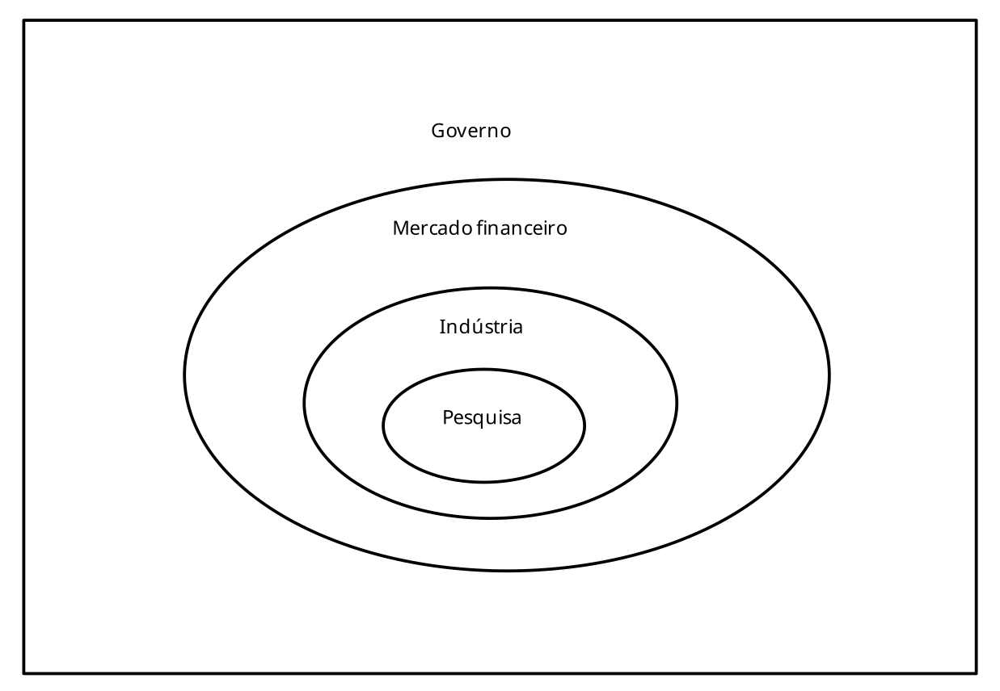

Toggle navigation
João Valle
Blog
About
Contact
Conteúdo

Como funciona a economia de IA
Papers
Forecasting chaotic time series: Comparative performance of LSTM-based and Transformer-based neural network
Dynamics and patterns of the least significant digits of the infinite-arithmetic precision logistic map orbits
Chaotical PRNG based on composition of logistic and tent maps using deep-zoom
Enable JavaScript for footnotes, Disqus comments, and other cool stuff.